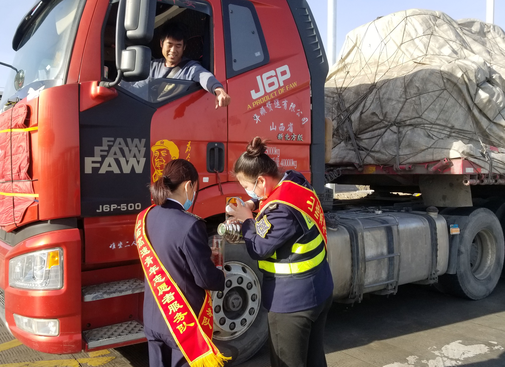

 “深入基层不放松，立根本在群众中”。日前，武威处山临所党支部积极践行党的群众路线，把“兴办实事解民忧”作为深化培育“特色党支部”、实践“三抓三促”“五精行动”“五抓五落实”等活动的重要内容，推动机关党员干部深入基层开展义务劳动，练好密切联系群众基本功。
所党支部结合现实收费环境，充分发挥基层党组织战斗堡垒、党员先锋模范作用，把艰苦风斗的优良作风与提升机关党员干部的服务意识、服务观念相结合，于 11月6日至7日两天组织机关工作人员奔赴辖区老寺庙职工拓展基地开展“党建引领聚势赋能 携手共进筑梦前行”主题党日活动。
活动中机关人员对办公楼前后道路、收费广场边坡杂物、树木枯枝等垃圾进行集中清理；对职工拓展中心的设施、设备进行了精心护理和清洁；开展“ETC办理”“入口治超”、服务区“车货无忧”保险、差异化减免政策宣传等便民志愿服务。大家在劳动和支援服务过程中争先恐后、干劲十足，每个人都冲锋在前，忙碌的身影构成了初冬一道靓丽的“绿色”风景线。大家在实践劳动中感悟劳动人民自力更生、艰苦奋斗的优良品质,也践行了为群众办实事的初心。
山临所党支部书记郑忠同志表示：“党建兴则事业兴，党建强则发展强，山临所党支部始终牢记初心、使命，在党建这面“红旗”下，不断激发党员干部职工干事创业的积极性。下一步，所党支部将持续以党建引领为抓手，深入开展多样化主题党日活动，不断推动党建+收费运营深度融合，助力高速收费各项事业高质量发展。”
多年来山临所已将义务劳动作为党员集中活动“规定动作”，不定期组织开展，活动不但增强了机关党员干部爱站奉献、服务社会的意识，而且促进了机关工作作风的悄然转变。通过参加此次主题党日活动，树牢了山临所干部职工“辛勤劳动为荣、敬业爱岗建功”的信念。活动后大家纷纷表示，在今后的工作中，将进一步焕发劳动热情、释放创造潜能，用劳动创造更加幸福美好的未来生活，为山临所收费运营管理赋能助力。